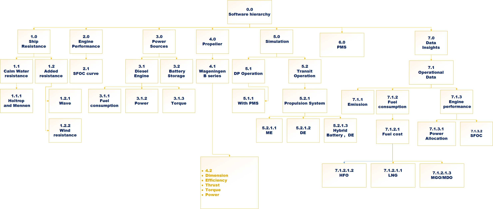

This section will contain major information
Relevant theories and information will be provided here during in the process
This web App is part of master's thesis project. The thesis involve developing a web app that will be use
for simulation of different vessel operation and also propulsion system machinery configuration.
More information regarding the scope will be provided later.
Engine SFOC extimation and comparison
for simulation of different vessel operation and also propulsion system machinery configuration.
More information regarding the scope will be provided later.
Major components
Ship resistance extimation
Engine SFOC extimation and comparison
Propulsion power extimation
emission extimation
Different vessel opeartion simulation
Above are subjected to change
Software hierarchy structure
